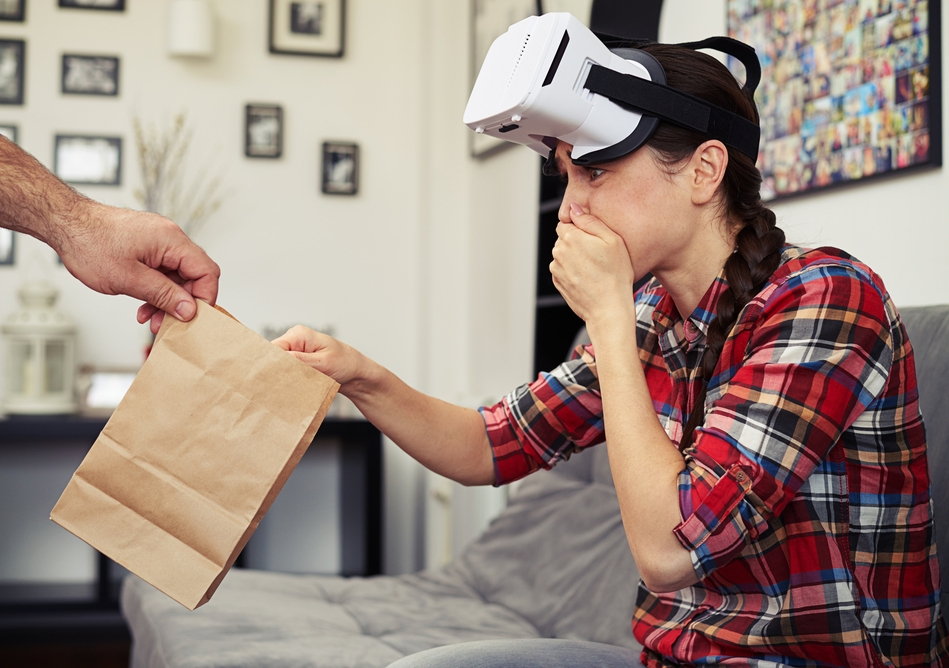

A common problem typically for new VR users, is that 40% of people report experiencing motion sickness when using VR (XR Today), usually when engaging in extreme activities like roller coaster rides or skydiving.
But if headset companies focused on education, this likely won't be a problem. The cheapest VR headset currently available is $399, but since VR is still relatively new, costs are expected to drop significantly in the coming years. According to Meta, all VR headsets will eventually replace all computers.

VR sickness is very temporary, and can last for an hour or even 24 hours in more extreme cases! however, luckily VR sickness is easy to combat!
Here are some ways to combat this